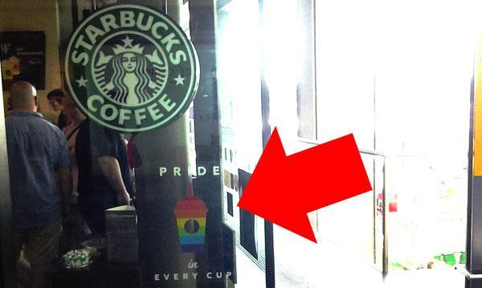

Daryush "Roosh" Valizadeh created ROK in October 2012. You can visit his blog at RooshV.com or follow him on Twitter and Facebook.


While there are dozens of corporations that are on board with the homosexual agenda, the one company that has been particularly active in spending millions of dollars to legalize homosexual marriage is Starbucks. They have been so hellbent on pushing gay marriage that shareholders have called out the company for operating like a homosexual charity that happens to sell coffee. It should not also surprise you that they are big donors to Planned Parenthood, a eugenics organization that proudly profits from the sale of dead fetuses. For these reasons, I wonder if all heterosexual men should stop spending money on the company.
The day after the Supreme Court ruling that legally endorsed gay marriage in the United States, I was at Berlin’s central station waiting for a train to Poland. With time to kill, I decided to grab an espresso at its Starbucks. This is what greeted me at the entrance:

AIDS in every cup
I paused, stared at the rainbow cup, and realized that by purchasing the espresso, I would be monetarily supporting Starbucks and their pro-homosexual, pro-abortion, and anti-heterosexual agenda. I went somewhere else instead, and since then I have tapered my Starbucks visits, even going to proletariat shops like Dunkin’ Donuts and 7-11 to get my coffee fix. I have been inconvenienced numerous times in seeking out an alternative venue, especially while in the United States.
The CEO of Starbucks, Howard Schultz, is so in favor of anything homosexual that one has to wonder if he developed Starbucks as a vehicle to push this particularly sinister agenda, which began surfacing in 2011. His intentions became crystal clear in January of 2012 when he allowed a vice president to make a statement that began official support for the destruction of traditional marriage (PDF).
We are deeply dedicated to embracing diversity and treating one another with respect and dignity, and remain committed to providing an inclusive, supportive and safe work environment for all of our partners.
This was further clarified when Starbucks backed attempts by degenerates to allow homosexual marriage in Washington State:
Starbucks said in a statement Tuesday that it was “proud to join other leading Northwest employers in support of Washington state legislation recognizing marriage equality for same-sex couples.”
“This important legislation is aligned with Starbucks’ business practices and upholds our belief in the equal treatment of partners,” the statement read.
Last year, Starbucks was among a group of 70 businesses and organizations that filed a brief in federal court opposing the Defense of Marriage Act, which restricts the definition of marriage to that between a man and a woman.
Starbucks has not been shy to spend money on lawyers to get involved with the courts to specifically legalize homosexual marriage. Their corporate legal department was one of 379 to petition the Supreme Court to re-write the rules of traditional marriage and inevitably make it easier for two homosexual men to get married and adopt young boys.
When a prominent shareholder accused Starbucks of putting the gay agenda in front of business, Schultz told him that the gay agenda is more important than profit, and he can sell his shares if he doesn’t like it.
Was Schultz taken aback? Not in the least. He responded, “Not every decision is an economic decision. Despite the fact that you recite statistics that are narrow in time, we did provide a 38% shareholder return over the last year. I don’t know how many things you invest in, but I would suspect not many things, companies, products, investments have returned 38% over the last 12 months. Having said that, it is not an economic decision to me. The lens in which we are making that decision is through the lens of our people. We employ over 200,000 people in this company, and we want to embrace diversity. Of all kinds.”
Many Americans think corporations exist solely to enrich their shareholders, but when it comes to the progressive agenda, ideology trumps profit.
If you had any doubt about Starbucks’ support of homosexuals above that of heterosexual marriage and tradition, take a look at company headquarters the day after the Supreme Court ruling:

There was also a press release where Schultz bragged about how far Starbucks has bent over to support homosexuals:
Being open, inclusive and forward-thinking is at the core of what Starbucks is about. Starbucks has been a longtime advocate for the LGBT community and marriage equality. The company filed an amicus brief to the Supreme Court case challenging the Defense of Marriage Act in 2013 and signed onto The People’s Brief earlier this year.
The shocker of the decade is that they’ve since become leading corporate activists for transsexuals. In the next five years they may even swap out their mermaid logo for something more fitting of their value system.

The cherry on top is Starbucks’ support for Planned Parenthood, an organization that earns profits by removing fetuses from the bodies of women before chopping them up for sale.
If evil comes in beverage form, it would have a Starbucks logo on it. If you are against the platform shared by feminists, social justice warriors, and liberals, I strongly urge you not to patronize Starbucks and its associated brands (Seattle’s Best, Teavana, Evolution Fresh, and Tazo Tea). Otherwise, every purchase you make at the chain goes into the pocket of a company that has vigorously used both marketing and legal means to push an agenda that goes against the values of decency and traditional family.
It’s hard not to feel a sort of hopelessness about the direction of Western culture. Traditional layers of society are being methodically removed for a degenerate experiment that seems to have a grand goal of destroying the family unit. Homosexual marriage was just one step over the past few decades that also included women’s suffrage, feminism, abortion, and birth control.
While our power is limited to reverse this direction, there are still things that we can control. One of them is to remove financial support of corporations that go against what we believe is right, a few dollars at a time. There are many more companies that support gay marriage, some of which we simply can’t avoid, but Starbucks was especially active and so they deserve to be punished for accelerating the decline of Western morals and tradition. I will do all I can to enact that punishment.
 If you like this article and are concerned about the future of the Western world, check out Roosh's book Free Speech Isn't Free. It gives an inside look to how the globalist establishment is attempting to marginalize masculine men with a leftist agenda that promotes censorship, feminism, and sterility. It also shares key knowledge and tools that you can use to defend yourself against social justice attacks. Click here to learn more about the book. Your support will help maintain our operation.
If you like this article and are concerned about the future of the Western world, check out Roosh's book Free Speech Isn't Free. It gives an inside look to how the globalist establishment is attempting to marginalize masculine men with a leftist agenda that promotes censorship, feminism, and sterility. It also shares key knowledge and tools that you can use to defend yourself against social justice attacks. Click here to learn more about the book. Your support will help maintain our operation.
This article was originally published on Roosh V.